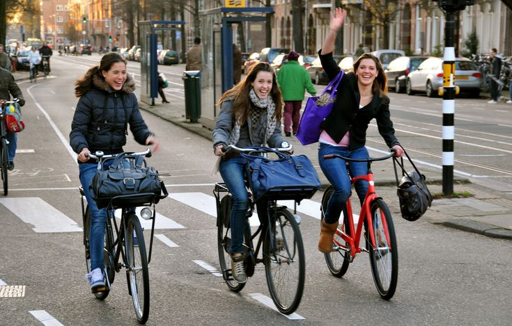
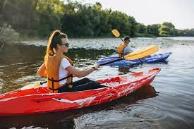

BICICLETA
Es una forma de ejercicio que mejora la salud cardiovascular, fortalece los músculos y ayuda a mantener un peso adecuado. andar en bicicleta ayuda a disminuir el tráfico y el estrés, promoviendo un estilo de vida más activo y saludable.

KAYAK
Es una forma de ejercicio que fortalece brazos, espalda y core, mejorando la resistencia y la salud cardiovascular. Además, practicar kayak ayuda a reducir el estrés, promover la relajación y conectar con el entorno natural.